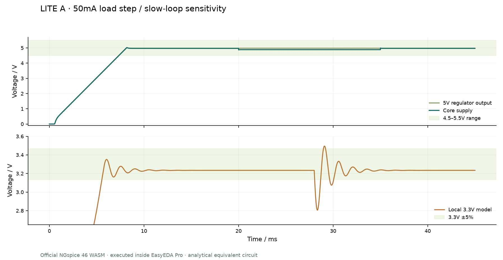

RAMストレージ
FPGA側128MB DDR3へ、READ / WRITE / COPY / FILLでアクセス。大きなデータの退避・復元や、専用APIによる外部メモリ利用を実験します。
M5STACK TAB5 × TANG PRIMER 20K CORE
Tab5とFPGAをつなぐ、2つの共通キャリア。外部DDR3のRAMストレージ利用と、汎用GPU・グラフィックアクセラレータを研究するためのハードウェアです。
Spark応募準備中 · 実機動作・製造承認は未確認
DDR3は明示的に読み書きする外部データ領域。Tab5のメインRAMが自動で増える構成ではありません。
01 / INTENT
FPGA側128MB DDR3へ、READ / WRITE / COPY / FILLでアクセス。大きなデータの退避・復元や、専用APIによる外部メモリ利用を実験します。
プログラマブルな描画・演算パイプラインを構成し、CPU処理と比較します。既存GPU APIへの互換性や、性能向上を保証するものではありません。
2D描画、三角形・Zバッファ、フレーム生成やHDMI出力を段階的に評価。実際の表示には、対応ソフトとFPGAビットストリームが必要です。
Linux外部メモリ実験とグラフィックス実験は、別ソフト・別ビットストリームで使用します。物理通信・DDR3初期化・描画性能は、製造後の実機検証が残っています。
02 / HARDWARE
| 項目 | FULL | LITE A |
|---|
DCジャック、Tab5接続ヘッダー、ARMヘッダー、停止スイッチもJLCPCBの波はんだ実装候補です。実装できない部品はLCSC単品購入・手はんだへ切り替えます。表示上の対応と、個別注文の実装承認は区別しています。
ショートピンは別梱包・初期未装着。Tab5とCoreモジュールは購入部品表に含めません。LCSC単品購入へのSpark支援は確認できていません。
03 / SIMULATION
公式NGspice 46 WASMを、EasyEDAのAPI Gateway内で実行。回路の解析等価モデルを使用し、製造用回路図全体の自動SPICE解析とは区別しています。
高速エッジでは送信端子の電圧範囲を外れるケースがあります。弱い駆動・SLOW設定、DATA setup/hold各250ns以上、DIR切替待ち500ns以上を前提に、実機で確認します。10〜40MHzでの安定動作は保証していません。
XC6206の近似モデルでは、50mAへの急変と遅いループを組み合わせた試験などで3.3Vの±5%範囲を外れます。局所3.3Vは通常10mA以下、外部給電なしを使用条件とします。これらの不合格ケースも公開しています。

解析には部品・寄生要素の近似があります。完全なIBIS解析、3D電磁界解析、熱評価、PD交渉の動作証明、HDMI認証、実機DMA・DDR3動作を示すものではありません。周期モデルの出力は計算後に100ps間隔で補間しています。
04 / BILL OF MATERIALS
| 参照番号 | 部品 / 値 | 個数 | LCSC |
|---|
個数は基板1枚分。未実装部品・取付穴・Tab5・Core・機構部品は除外しています。在庫・価格・最小購入数は変動し、部品確保や注文の承認は行っていません。
05 / FILES & NEXT STEPS
各版のEasyEDA Proプロジェクトには回路図・PCB・ライブラリを収録。BoM、部品座標、Gerber、組立図、解析条件・結果・入力ハッシュをリポジトリに記録しています。
この公開は参加登録・材料申請・採択を意味しません。支援は登録時の自動入金ではなく、設計・見積などの審査とクーポン承認を伴います。製造発注・支払いは未実施です。